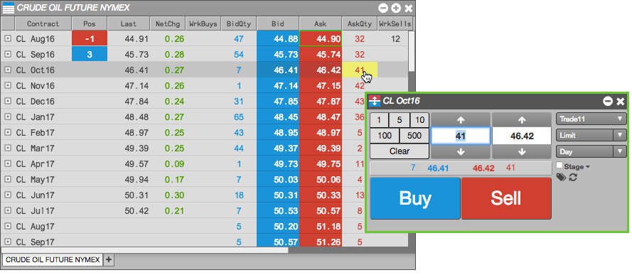
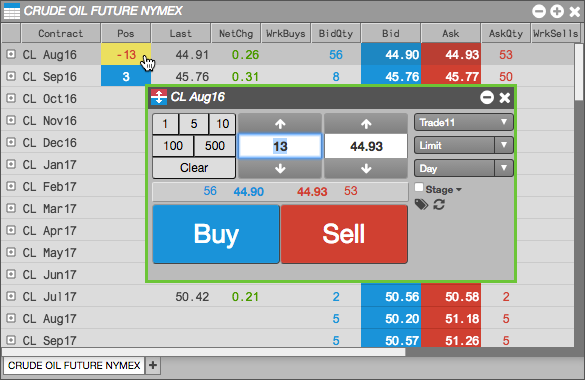
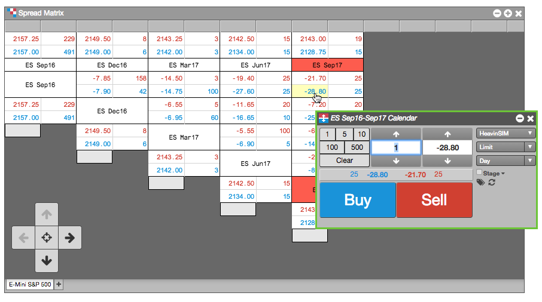
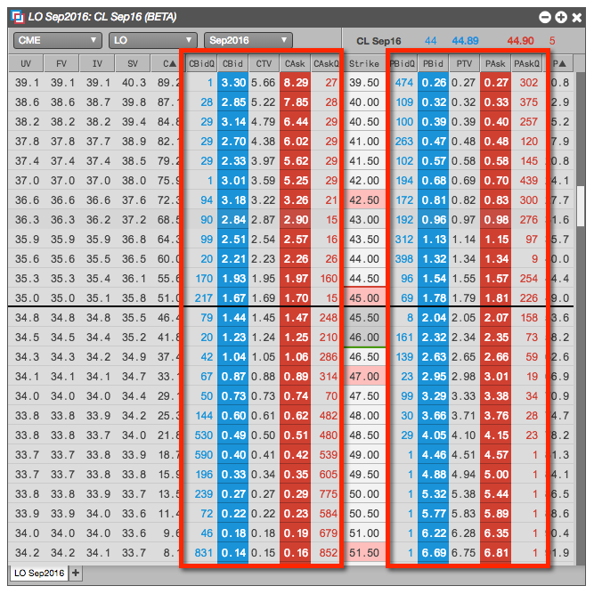
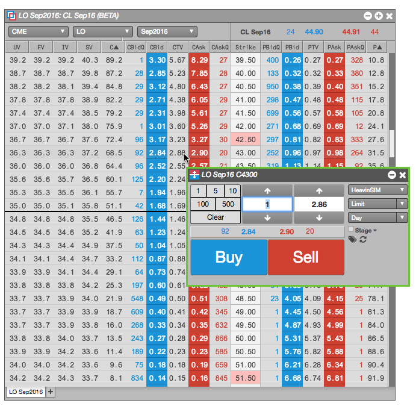

Launching a floating Order Ticket from Market Grid
A floating Order Ticket lets you quickly enter orders by pre-populating the Order Ticket with market data from the Market Grid. A floating Order Ticket opens when you click on any inside market (Bid, Ask, BidQty, AskQty) column or the Position column when you have an open position.

Note: The green border around the Order Ticket indicates that it is a floating ticket that will close when you place an order.
To launch a floating Order Ticket for an instrument in Market Grid, click one of following column values:
-
Bid or Ask column to submit an order at the current price.

-
BidQty or AskQty column to submit at order for the available quantity.
-
Pos column to liquidate your position.

Launching a floating Order Ticket from Spread Matrix
You can also launch a floating Order Ticket from the Spread Matrix widget to submit an order for spread.
To launch a floating Order Ticket from Spread Matrix:
-
Identify the intersection of the two instruments that form the spread you want to trade.
-
Click one of the Ask or Bid values for the spread.
In this example, you click the Bid price for the ES Sep16-Sep17 calendar spread.

Launching a floating Order Ticket from Options Chain
You can also launch a floating Order Ticket from the Options Chain widget to submit an order for spread.
To launch a floating Order Ticket from Options Chain:
-
Locate the options contract you want to trade.
-
Click one of the following values:

The floating Order Ticket opens with the selected value populated.
